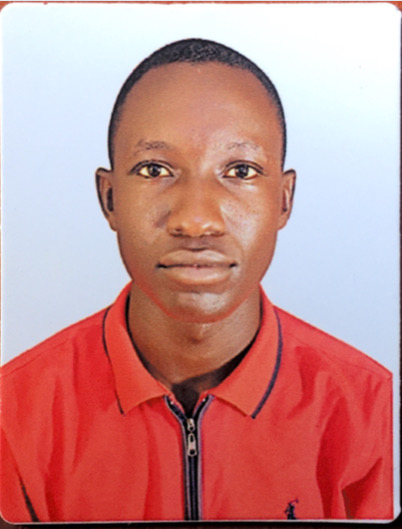

|

CONTACTMuni UniversityArua-Muni-Ocoko Road P.O.Box 725,Arua City Phone:+256-779-979-629 Email:otungaallanhenry256@gmail.com MISSIONTo empower individuals and organizations through innovative technology solutions,enhancing productivity, security,and connectivity while fostering a culture of continuous learning and improvement. LEADERSHIPDuring my secondary life i served as a student leader. I was the UNSA class representative of the school and I acquired leadership skills that furthered my aspects of life. Currently pursuing a Degree course of MIT at Muni University. |
OTUNGA
|
| UACE(Uganda Advanced Certificate of Education)Mentor Secondary School, Lira Uganda, 2022. | UCE(Uganda Certificate of Education)Lira Town College, Lira Uganda, 2019. | PLE(Primary Leaving Education)Olaka Annex Primary School, Lira Uganda, 2015. |
Served as UNSA class Representative during my O level(2017-2019), worked in Nile Breweries as assistant Sales Representative in one of the sub depots.